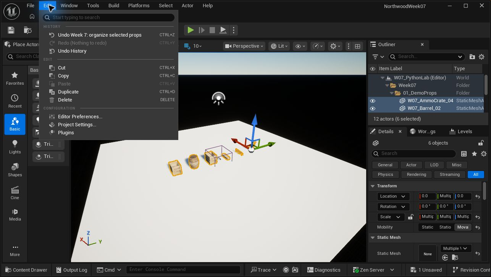

Week 7
Python in Unreal
A working Week 7 foundation: the full Northwood environment, a small six-prop teaching map, and a repeatable Inspect → Check → Preview → Apply → Verify → Undo demonstration.
Project provenance — instructor confirmed, 10 October 2026: The original Northwood project was the result of Prof. Monteagudo working through Isaac Oster’s publicly available online UE Python course, Utilizing Python for Editor Scripting in Unreal Engine. He confirmed this context after compiling notes from sources he had already reviewed. Week07UnrealPython is the later classroom-preparation spinoff; its six-prop lab, controlled-edit tooling, and new captures were added for Week 7. Compiled prep notes and course context.
Tested in Unreal 5.7.4 Source project preserved
The working spinoff
Week07UnrealPython.uproject
Quick-start text · Teaching module
About 8.6 GB of copied content. Python and Editor Scripting Utilities are explicitly enabled. No remote-execution setup is needed.
Two useful contexts
/Game/Northwood/Maps/Northwood
The original environment for motivation and scale.
/Game/Week07/Maps/W07_PythonLab
The isolated rehearsal map: six prop Actors, five shared mesh assets, one camera.
Start the demo
Working in VS Code alongside Unreal: open Week07PythonTools.code-workspace. The tooling development guide covers the package layout, five lesson examples, autocomplete, reload workflow, and local/editor tests. Save code in VS Code, then run w7.reload_tools() in Unreal. Existing demo commands below remain available.
Open the spinoff in Unreal 5.7. The Python lab is its startup map. Open Output Log, select Python beside the input field, and run these lines individually. If the input is still in Cmd mode, prefix a line with py and do not wrap the code in quotes.
1 · Establish scope
Two of the crate Actors reference the same mesh asset. Content Browser selection and level selection are separate.
import week07_tools as w7 w7.select_demo() w7.inspect_selection()
2 · Check, then preview
The seeded props fail the fixture's label and placement rules. Preview lists the exact before/after values without changing the scene.
w7.check() plan = w7.preview()
3 · Apply and verify
Six selected Actors get consistent labels and evenly spaced origins. All six then pass. Shared mesh assets remain unchanged.
w7.apply(plan) w7.check()
4 · Show recovery
Use Edit → Undo Week 7: organize selected props, or click the viewport and press Ctrl+Z once. Run Check again. For repeatable rehearsals:
w7.reset_demo() w7.select_demo()
Apply and Reset do not save. Keep the map's saved state as the scattered baseline. If you save the organized state, run Reset and save the current map to restore that baseline. Undo records are editor-session history, not a file backup.
Camera, selection failures, reload, and reports
# Match the 16:9 capture camera; don't fly the camera while piloting. w7.capture_view() # Return to normal editor navigation. w7.capture_view(False) # No selection produces a warning and no plan. w7.actors().clear_actor_selection_set() plan = w7.preview() # After editing the module during class: import importlib importlib.reload(w7) w7.reload_tools() # Export selected Actor/Component/asset evidence under Saved/Week07/Reports. w7.export_report()
A mixed selection containing a light, floor, or unrelated Actor is refused. A change to the selected Actors, their labels or locations after Preview makes Apply refuse the old plan. Review a fresh preview before continuing.
Images & GIF
These are actual Unreal renders from the prepared map. The GIF is a labelled comparison of discrete before/apply/reset states; it is not a live recording.


Original scene and verified Undo capture


Reset PNG · Render provenance · Fixture asset paths and scales

Where this fits Week 7
Aligned with the revised agenda and source compilation. This is preparation for the existing lesson, not a new student requirement.
| Agenda section | Use the demo for | Read-aloud cue |
|---|---|---|
| Setup · slides 3–4 | Python plugin, Output Log mode, importing the module. | “Unreal supplies the scene objects. Python lets us ask questions about them and repeat an editor task.” |
| Introduction · slides 5–8 | Two crate Actors → separate Components → one mesh asset. Inspect a small selection. | “These are two placements of the same asset. Which layer should we change if only this placement needs to move?” |
| Tool examples · slides 9–11 | Manual need, readable report, reviewed plan, Apply, Verify, Undo. Include no-selection feedback. | “Before we automate a change, we should be able to name its scope, predict its result, and explain how to recover.” |
| Lab · slide 12 | Candidate: select two props, inspect their shared asset, preview their changes, and explain one rule. | Provisional instructor option; no assignment or submission requirement has been added. |
| UI/UX · slides 13–16 | Compare no-selection feedback, stale-plan refusal, clear change counts and recovery. | “Does the tool tell us what it acted on, what happened, and what we can do next?” |
Evidence and remaining preparation
Verified
- Map built and saved in the full Unreal Editor.
- Nine scripted checks passed: empty/unrelated/stale selection, shared asset identity, baseline failures, six changes, all-pass result, no-op repeat, and Reset.
- One named Undo restored labels and placements in the live editor.
- Three real 1600 × 900 captures were rendered and inspected.
Still to prepare
- Batch FBX import example and its source fixtures.
- Final student lab choice and instructions.
- Live screen recording with Output Log and narration, if desired.
- Placement of these captures into the slide deck.
The existing PowerPoint has not been edited in this pass. No production-wide validation or performance audit is claimed.
Implementation and project provenance
Copied the saved project from C:/Users/antho/OneDrive/Documents/Unreal Projects/Northwood into the workspace as Week07UnrealPython. Original content paths are preserved, including all six maps. Source caches, autosaves and unsaved session changes were not copied.
The spinoff explicitly enables PythonScriptPlugin and EditorScriptingUtilities, removes a malformed AdditionalPaths entry (Content/Python is already discovered), corrects the obsolete IOS_12 setting to IOS_15, and opens the new lab by default. Remote execution remains off.
The old tutorial scripts are preserved under Reference/LegacyPython with disabled extensions. They include syntax errors and incomplete functions; they are not part of this demo's import path. The source project's versions are unchanged.
The fixture scales props for display; it is not a physical-scale benchmark. Alignment spaces Actor origins, not mesh edges. The checker evaluates only this fixture's label/placement/missing-mesh rules. Imported materials and assets retain their existing provenance.
The initial commandlet build crashed in LevelEditorSubsystem.new_level. Its partial map was preserved under Saved/Week07/FailedCommandlet; the successful build used the full editor. Future fixture building and captures should use full-editor execution.